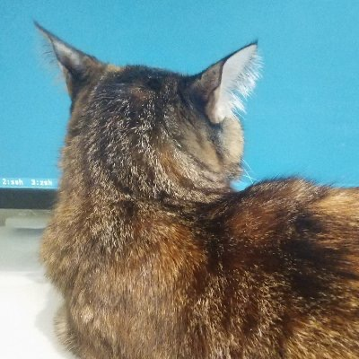
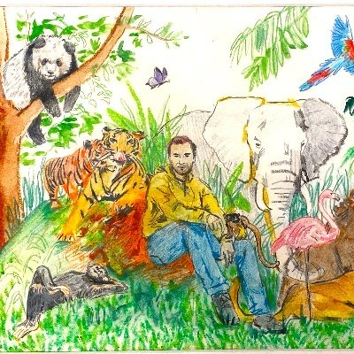
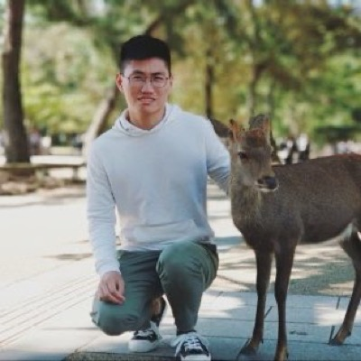
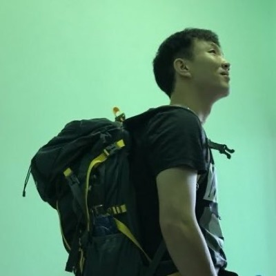

DESIGN × DEV · 132 PROFILES
132 位把代码写出审美的开发者
独立开发者、设计工程师、开源作者、写作者。每一页整理一个人：做过的作品、个人网站的样子、一路走来的经历，以及我们能从中学到什么。
种子 · 用户提供 20

nextai-translator、avante.nvim、magpie 的作者；GitHub Stars 成员，近一年在 GitHub 上提交近 1.8 万次。

冰箱 Ice Box（Google Play 500 万+ 下载）、通知滤盒、Clip Cloud 的作者；新作 AndroMeld 把 Android 接进 Mac。

Pake、Mole、MiaoYan、Kaku、Kami 的作者，GitHub 累计 18 万星；《潮流周刊》写了近六年。

react-motion、Pretext 的作者；参与 React、Messenger、ReasonML / ReScript，现于 Midjourney。

React Compiler 核心成员；hiring-without-whiteboards（★5.3 万）发起人；曾在 Netflix 任工程经理，后于 Meta、Cursor，现于 xAI。

前腾讯 / 微软工程师。博客横跨深度学习工程、海外产品、商业分析与山海徒步，每篇都能当手册用。

bilingual_book_maker、xiaogpt、running_page 的作者；2025 年给 68 个开源项目提了 500 个 PR。

Apache Arrow / DataFusion / Doris PMC；OpenCLI（★3 万）作者，正在建设 Apache Maka。

Memoh（★2.7 千）、ChatTutor、Oh My GitHub 的头号贡献者；Felinic 团队成员。

开源书《深入理解 AI Agent》（★5.5 万）作者；前华为「天才少年」、Pine AI 首席科学家，现为独立研究者。

shadowsocks-android（★3.7 万）、shadowsocks-c 维护者；NVIDIA 芯片架构师；2026 年用 Agent 一口气做了十几个项目。

Ubuntu Tweak、Manico、PasteNow、PopTranslate 的作者；杭州图拉鼎科技的独立开发者。

ItyFuzz 作者、FuzzLand 联合创始人兼 CTO；漏洞赏金 190 万美元；Claude Code 源码泄露事件的发现者。

Multica 创始人；andrej-karpathy-skills（★22 万）作者；曾做 Devv AI，前 TikTok US 工程师。

实验电影导演、AI 艺术家；AI 动画《To Dear Me》获北影节 AIGC 单元最佳影片，曾任 Midjourney 中国社区负责人。

Mkdirs、MkSaaS、TanStarter 模板作者；副业出海一年多收入 11.8 万美元，并全部公开。

PNChart（★9.6 千）作者；Kana Origin、Oyomi、Hanami 等日语学习 App 的独立开发者，参与 Miraa。

CapWords 开发团队：2025 Apple 设计大奖「趣味与愉悦」得主、App Store 中国大陆区年度 App；2026 年推出 CapMusic。

UI 设计师；Design Scenes 博客与 Design Fragments 收集站作者，LLM 表情包合集 llm-things（★618）。

AirBuild 创始人；曾在 AFFiNE、Bridge。和朋友一起做了 Viber、Slabox、Stacklight、TTY.Build 等十多款作品。
第一批 25

熊猫吃短信、ServerCat、OpenCat、DAMA 的作者；X 上 16 万关注，「一个自由的程序员，以卖 App 为生」。

TypingMind（月入 13.7 万美元）、DevUtils 作者；《My Indie Book》作者；X 上 20 万人关注。

Awesome（★52 万）、got、ky、type-fest、pure 的作者；一人做了 60 多款 Mac / iOS App。

Apollo for Reddit（18 万评分）、Pixel Pals 的作者；前 Apple 员工；公开关停 Apollo 的全过程。

AirBuddy、VirtualBuddy（★8.8 千）、非官方 WWDC App（★8.7 千）作者；苹果平台安全研究员。

ibackupextractor、SwiftUI-2048、CodeCursor 作者；Zoom 桌面客户端工程师，博客 cy4n.dev。

Ice Cubes、MovieSwiftUI、CodexMonitor 作者；前 Medium iOS 工程师，现负责 OpenAI Codex 开发者体验。

vphone-cli（★1.6 万）、Asspp、NotchDrop、FlowDown 的作者；Viber、Deux、LookInside 等项目的合作者。

App All Day 名下 31 款 App 的独立开发者；ASO 截图与问卷式引导 Claude Code Skills 的作者。

Kingfisher、VVDocumenter、FengNiao 作者；objc 中国创办者；2026 年做了 Prowl、sim-use、Glyphon。

Elite Hoops（月入 1 万美元）、Spend Stack、Alyx 的作者；Swiftjective-C 博主；Superwall 开发者关系。

Super Easy Timer 作者；前 GoPro Staff iOS 工程师，iOS 教育者；用 Codex 公开构建 App。

沉浸式翻译联合创作者；Actionsflow、Buzzing 作者；2026 年做了数字花园博客系统 Jant。

Swift with Majid 博主、SwiftUI Weekly 编辑；CardioBot、NapBot、PlatePal 的独立开发者。

Detail 设计细节合集与 Interface Details Skill 作者；FlowFerry、Toolkits 开发者；前飞书 / TikTok Shop / LobeHub。

Nomads.com、Photo AI、Interior AI、Remote OK 作者；《MAKE》作者；一个人零融资的创业帝国。

flomo 浮墨笔记、小报童联合创始人，收购幕布；《笔记的方法》作者；产品沉思录写了 300 多期。

nolyfill、foxact、Sukka Ruleset 作者；Hexo 核心成员；eslint-plugin-import-x 维护者；现于 Manus。

PaywallPro 付费墙情报平台作者；20 个 App、12 个网站、500 万用户全自然流量；X 上 7 万人关注。

TrustMRR（$53K/月）、DataFast、ShipFast、CodeFast 作者；一个人做了 38 个创业项目，X 上 41 万人关注。

HeadshotPro 创始人（收入超 1,000 万美元、1,700 万张职业照）；Landingfolio、Headlime 的作者。

Hacking with Swift 创始人；Control Room、Inferno、Ignite、SwiftUI-Agent-Skill 作者；2026 年推出 Kickstart。

Yep 主力开发者（6,304 次提交）；dev-blog、MonkeyKing 作者；Ducky、Anycode、Crowfi 的独立开发者。

X-TOC、Bookmark Assistant、DashBye 作者；九年工程师，业余为自己做工具，中英双语写作。

腕记 WristMemo、X2XHS、画题封面生成器的作者；大厂 AI 工程师，业余做「一天一个 App」。
第二批 25

MacWhisper、Navi、Posture Pal 作者；Good Snooze 名下 20 多款 App；Swift Charts 示例（★2.4 千）作者。

LTMorphingLabel（★8.1 千）、VPNOn 作者；业余独立做了 SubList、SwiftyMenu、RegEx+ 等八款 App。

Cusdis、WebShell、ccmate 作者；前阿里、蚂蚁、虎牙、微软中国工程师，现以 Randynamic Studio 独立做产品。

Flashlight、Ball、web98 作者；The Browser Company 首位设计师，现在 Anthropic 做设计。

jlens-qwen36、opencode-vision、COWMacro 作者；前字节跳动 DanceUI 核心贡献者，工业设计出身。

Motion、Ignition、Albums 作者；越狱社区出身，Netflix iOS UI 工程师，爱合成器也爱赛车。

Twitterrific、Tapestry、Provisioning 作者；The Iconfactory 合伙人，写了快二十年的 furbo.org。

RXlingo、VibeCap、Cap4u、Bible 2460 作者；流利说首位设计师，现在美国达拉斯做一人公司。

Shiro、Mix Space、Afilmory、余白 Yohaku 作者；LobeHub 设计工程师，数字游民。

Draw Things、libccv（★7.2 千）、libnnc、dflat 作者；前 Snapchat iOS、Facebook Videos 联合创立者。

Diagrams for Mac 作者、Structured Path GmbH 创始人；LoremSwiftum、OrderedDictionary 开源作者，德累斯顿的 Swift 自由开发者。

Amphetamine 与 Amphetamine Enhancer 作者；一个让苹果收回审核决定的独立 Mac 开发者。

Music Mate、Artwall、Setlists、Lazy K 作者；前扇贝、流利说 iOS 工程师，Sup Space 创始人。

OpenClaw、CodexBar、PSPDFKit 作者；X 60 万关注，2026 年加入 OpenAI 做 Agent。

Devouring Details、Web Interface Guidelines、inspx 作者；Vercel Staff Design Engineer，前 Arc 浏览器设计工程师。

「肘子的 Swift 记事本」博主、Fatbobman's Swift Weekly 主理人；ObservableDefaults、CoreDataEvolution 作者。

Swift 并发提案中文译者，「Hackable life?」博主；研究系统 App 交互细节的深圳 iOS 工程师。

Pi Index、Pace、PiNomad、Voily 作者；前华为 IDE 与开发者工具工程师，南京的 AI 原生独立开发者。

AeroSpace（★2.3 万）作者；前 JetBrains / Kotlin 工程师，阿姆斯特丹。

Zenitizer、Daylish、Day Peek、Go For It! 作者；前 Apple 软件工程师，德国独立开发者。

Copyla、Clacklet、Forge 作者；拾穗数据、IndieMaker 主理人，杭州的一人公司。

Veil for Mac 作者；分享 Cursor 与 Agent 上线实操的独立 Mac + AI 开发者。

uRSS、PixelLoupe、BrowserSwap、Ultravault 作者；主张没有账号、没有算法的独立 App 工作室。

NotchMind、TapNoise、cot-redteam-agent、vibe-learn 作者；印度苏拉特的 GenAI 工程师与学生开发者。

漫画胶囊 Manga Capsule、TranslateOff 作者；做本地优先、端侧 AI 的 iOS 开发者。
第三批 · 偏中文 22

typo.css、pen 作者；Built4.Fun 主理人，做 Jinshu、小小作家、小书童。

Piecelet、enable-chrome-ai、Crane 作者；Photon 创始设计工程师，前腾讯、LangGenius。

Heron Handoff、Figma Icon Automation、Figmacode、MacMenuBar.app、SkyBreak 作者；烟台的设计工程师。
DEX 周刊主理人；前 36Kr 设计总监、OPPO 设计经理，做 topfeed、What Ships、vibeflow。
save_it、Vmemo、ZipcodeJP、AIer 作者；在日本镰仓的自由职业全周期开发者。
小黑插图 Skill（★1.27 万）作者；Dribbble 万粉产品设计师，Indie Builders 主理人。

Fudoki、Terebi、Clawtter 作者；文悦科技创始人，出版七本书，东京在住的程序员、作家与编剧。
DeepChat（★6.4 千）主要作者；DimAgent、Vokie、vibe-keyboard，上海的 AI 应用开发者。
Gika、Wuhu、Arcroom 作者；良渚边上的 iOS 独立开发者。

LumiFlow 开发者；播客「海螺电台 The Spiral」创作者与主播，杭州。

Twitfold 作者；前 TikTok 工程师，新加坡的独立 iOS 开发者。

App Store Price、Pinlist、AIUsage、Phote 作者；在飞书生态做企业 AI 的杭州全栈工程师。

UniClipboard（★1.9 千）、EchoPlayer、wx-ime-sdk 作者；上海的本地优先软件工程师。

Xspark AI 全栈工程师，前腾讯蓝鲸平台 SaaS 开发；从年度总结里的目标一步步走到现在。

Resomark 作者；为人机协作写作做本地 Markdown 工作台的 Mac 开发者。

Parussoft 十几款小应用作者：SleepTap、Rooster Time、Gesture Albums、Xliff Tool、DeepSeekStatus。

LayerFS（★1.2 千）、Ephemeral Sandbox、Mayfly 作者；Ephemeral AI Lab 创始人。

Lemo-Opuscar（★4.7 千）、lemo-wake、lemo-mod、codex-radar、Stampy 作者；墨尔本的独立开发者。
《死者不在现场》《英语自学手册》作者、《动物庄园》译者；EPUB Tweaker、PDF Slicer 开发者，堪培拉。
前快手、小米、Boss 直聘、猫眼 iOS 工程师；Bourne、swift-macho、Atelier 作者，东京涩谷。

豆蔻 Doco、dsh-alpha、SimpleRPA 作者；做人与 Agent 共写基础设施的独立开发者。

GOTSTAR：Braun Player、Mimi、KINE Skills、Glimmering Isles；产品经理与儿童故事叙事设计师。
第四批 · 用户补充 40

谜底科技联合创始人；谜底时钟、谜底黑胶、OffScreen、Dtd Playlist 出品方，参与 CapWords，杭州。
今日头条、PICO、豆包手机动效设计负责人；web-shader-extractor Skill（★765）作者，北京。

Vercel CEO；Next.js、Socket.IO、Mongoose、v0 背后的人，旧金山。
Cursor 创始团队工程师；Voxelize（★690）、mc.js（★2.7 千）、typehere.app 作者，旧金山。
LLMs-Zero-to-Hero、Hands-On LLMs 中文版作者；ApeCode.ai 创始人，前字节跳动、腾讯大模型工程师。

Stealward、Numpkin 开发者；PocketChest（★466）作者，Google 软件工程师。
Testimonial.to、PDF.ai、Chat.sh、PDFgen 创始人；前 Cisco 工程师，「Build my own portfolio」。
《咸鱼不想死》《石油之王》《AAA 下水道清理大王》作者；godot-game-dev-skill、Pixel Cosmos Studio 开发者，广州。

OpenAI 图标设计负责人；前 Apple SF Symbols 首席设计师，绘制 1 万多个图标，旧金山。

skynet（★1.4 万）、sproto、ltask、soluna 作者；前网易、简悦、阿里灵犀，《游戏之旅》作者，广州。

津津乐道播客网络、声湃 WAVPUB 创始人；连续创业者与资深开发者，美国心脏协会培训导师，天津。

《正则指引》作者，《精通正则表达式》《程序员的职业素养》译者；公众号「余晟以为」，旅居德国。

Bootstrap（★17.5 万）作者；前 Twitter、GitHub 设计负责人，Pierre 首席产品官，加州米尔谷。
Delphia 首席设计师；Pilot 联合创始人（被 Shopify 收购）、前 Shopify 高级产品设计师，多伦多。

前 DoNews CTO、Weee! 联合创始人，RUM / Quorum 技术负责人、dfserver 作者；博客「HuoJu's BLOG」、公众号「歪理邪说」，渥太华。
Nebula（Agent Labs）创始人；Falcon Pro、Hacked、Ethrone 作者，前 Twitter、Twitch、thirdweb，旧金山。
Google Jetpack Compose 产品经理；Plaid（★1.6 万）作者，Android 设计与动画布道者，伦敦。
Google Labs 产品设计工程师；Firebase Studio 创始设计师，Muzei、DashClock、Android Asset Studio、IconKitchen 作者，纽约。

AppCompat、Design Support Library、Palette 工程负责人；Haze、Tivi、Android-PullToRefresh 作者，英国巴斯。
慢雾科技创始人；《区块链黑暗森林自救手册》《Web 前端黑客技术揭秘》作者，前知道创宇技术副总裁。

Honest Dot / 倪爽设计工作室创始人；20 多年经验的 UX 与品牌设计顾问，X 关注者 10 万+，美国。

AI 工程师，阿里 / 蚂蚁；online-markdown、性能专栏、Agent Pulse 作者，「小胡子哥」，杭州。

中文 AI 论文与行业解读博主，X 关注者 4.2 万；前斯德哥尔摩大学博士生，瑞典斯德哥尔摩。
perp-dex-tools（★865）等开源交易机器人作者；前对冲基金、金融科技从业者，纽约。
Predict.fun 创建者；自述前币安研究主管、PancakeSwap 创始人，X 关注者 25 万。

Eureka Labs 创始人；OpenAI 创始成员、前特斯拉 AI 总监，CS231n、nanoGPT、nanochat、autoresearch 作者。
Botiverse 联合创始人兼 CEO，Raft 作者；前 Kimi CLI 作者、RisingWave 内核工程师，NoneBot 作者。
OpenAI API 开发者平台工程负责人；a16z、Lenny's Podcast、BG2Pod 嘉宾，旧金山湾区。
MagicTouch Studio 创始人；Pandora、图图记账、Aphrodite、Apollo、Orea 作者，前锤子科技，北京。
Funda AI 创始工程师；前 LlamaIndex、Better Auth 创始工程师，Node.js、Waku、Jotai 成员，finance-skills 作者，多伦多。

SentiaRead 作者；16 年研发经验的独立开发者与 AI 内容创作者，前创业公司合伙人。
Google DeepMind 开发者体验、Kaggle 基准测试；前 Manus，Instructor 与 Kura 核心贡献者，旧金山。
BibiGPT 创始人（100 万+ 用户）；前 Thoughtworks、阿里巴巴工程师，B 站 / YouTube 创作者，成都。

Geddle 创始人、Wanderboat 前联合创始人；Rust Search Extension、Zine、Rust Magazine、AIScript 作者，北京。

ScreenKite、PilotCut 创始人；前微软工程师，Ultra MCP 作者，加拿大。

OpenCode 创始团队；SST 联合创始人兼 CTO、Anomaly 联合创始人，旧金山 / 多伦多 / 北京。
Tailwind CSS（★9.8 万）作者、Tailwind Labs 创始人，《Refactoring UI》合著者；2026 年加入 Shopify，加拿大安大略。
Vercel Labs；agent-browser（★4.4 万）、json-render（★1.9 万）、scriptc、portless、wterm 作者，奥斯汀。

MCP.so、ShipAny、ThinkAny、FastClaw 作者；前腾讯后端工程师，独立开发者，广州。
SwitchHosts（★2.7 万）、WonderPen 妙笔、图几作者；前阿里巴巴工程师，《JavaScript 权威指南》译者之一，杭州。
关于这个项目
名单来自一个持续维护的研究池 x-design-devs.md：先由种子账号出发，再按「设计感 × 工程能力」分三批扩展，并给出 3–5 分的主观评分。
每篇人物志都基于公开资料整理：X 个人资料、GitHub、个人网站与博客、播客与采访等，并在页尾列出来源。视觉风格参考了 AirBuild 的博客排版。